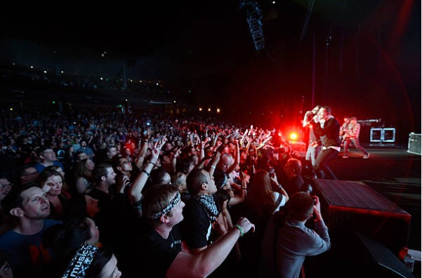

O Living Things é o quinto álbum de estúdio do Linkin Park, lançado em 26 de junho de 2012, pela Warner
Bros. Records. O disco marca uma fusão entre o som eletrônico experimental de A Thousand Suns e a
agressividade dos primeiros trabalhos da banda, resultando em uma mistura de rock alternativo, rap rock e
música eletrônica com elementos mais acessíveis e pessoais. É um álbum que explora emoções humanas, como
raiva, perda e superação, com letras mais íntimas e introspectivas. Pela terceira vez consecutiva, foi
produzido por Mike Shinoda e Rick Rubin. Teve 4 singles: Burn It Down, Lost in the Echo, Powerless e Castle
of Glass. Estreou em 1º lugar na Billboard 200 e vendeu mais de 2 milhões de cópias no mundo todo.
Linkin Park no American Music Awards 2012 performando BURN IT DOWN,
Los Angeles
A síntese da jornada musical
Pelo terceiro álbum consecutivo Rick Rubin e Mike Shinoda foram os produtores. De acordo com Chester, a
banda já tinham iniciado a produção do álbum em junho de 2011. Rubin disse: “Tipicamente nós nos reunimos
uma vez por semana para ouvir e falar de algumas canções que compomos. Muito cedo no projeto, elas são muito
mais longe do que foram nos dois últimos álbuns que fizemos. No A Thousand Suns havia muito ferro e fogo.
Nós sabiamos, 'Ok, não podemos ficar nisso pra sempre. Vamos deixar esta área e nós vamos voltar a isso
quando recomeçarmos”. Mike disse à revista Complex que eles ficaram quase um ano trabalhando no álbum,
elaborando seu som, e completou dizendo que: "O álbum não perde nada da criatividade dos nossos antigos
trabalhos e traz deles a antiga energia. É uma espécie de um som abrangente. Eu acho que nós fomos capazes
de reunir tudo que aprendemos no caminho até aqui em nossas carreiras para colocar tudo junto em cada canção
e ainda assim conseguimos ser originais e avançados."
O Living Things trouxe letras mais pessoais e emocionais, abordando temas como raiva, perdão, perda e
superação. A sonoridade combinava elementos eletrônicos com guitarras fortes, batidas digitais e estruturas
de canções mais tradicionais. Músicas como Burn It Down e Lost in the Echo refletiam bem essa fusão. Já
Castle of Glass trouxe uma atmosfera mais melancólica e folk, enquanto Powerless encerrou o álbum com
intensidade emocional. Mike Shinoda retomou com força o rap em várias faixas, equilibrando com os vocais
explosivos de Chester Bennington, que se mostrava cada vez mais versátil. Joe Hahn, responsável pelas
texturas eletrônicas, teve papel fundamental no som do álbum, contribuindo para a identidade híbrida do
projeto. Como Shinoda explicou: "Finalmente nos sentimos confortáveis com o som que tínhamos." Em seu blog,
ele escreveu: "Para mim, trata-se de retornar à verdadeira 'teoria híbrida' — não ao álbum com esse nome,
mas à ideia de que os seis caras da nossa banda têm gostos musicais drasticamente diferentes, e a mistura de
todos esses sons em um é exatamente o que construímos para a nossa banda."
Linkin Park em 2013 durante o Living Things World Tour, Taipé
Desintegração e reconstrução
A arte do Living Things marcou uma nova fase estética para o Linkin Park. O álbum teve sua capa criada por
Brandon Parvini e a equipe do Ghost Town Media, empresa que já havia trabalhado com a banda anteriormente em
projetos e videoclipes. A capa mostra um corpo humano aparentemente se desfazendo em partículas ou sendo
formado por elas, refletindo o conceito de fusão entre o orgânico e o digital, tema presente em todo o
disco. Segundo Parvini, a intenção era capturar "algo que representasse tanto emoção quanto transformação".
A equipe também trabalhou diretamente com Joe Hahn e Mike Shinoda, sempre presentes na criação da arte
visual.
Em entrevista à Kerrang! em 2012, Mike Shinoda explicou sobre o título do álbum: "Escolhemos o título Living
Things porque é mais sobre pessoas. É mais sobre interações pessoais.".
Embora Frank Maddocks, colaborador frequente da banda, tenha sido creditado em todos os álbuns anteriores,
não há registros oficiais de que ele tenha atuado na arte principal do Living Things.

Linkin Park em 2013 durante o Living Things World Tour, Las Vegas
O julgamento da fusão
O Living Things foi um álbum que juntou todos os discos anteriores, e no geral recebeu critícas positivas.
The Guardian deu ao álbum 3 de 5 estrelas, dizendo que "Living Things é mais pessoal que A Thousand Suns,
com temas subjacentes de se recuperar de experiências traumáticas. A exceção, "Burn It Down", mostra
sentimentos antiguerra ao estilo Depeche Mode com uma pegada eletrônica, enquanto as similaridades continuam
em "Roads Untraveled", que é uma balada estranha confessional". No site Metacritic recebeu uma nota total de
60 de 100, baseado na resenha de 15 críticos profissionais. Chad Childers da Loudwire deu a Living Things 4
de 5 estrelas, dizendo que o "álbum continua a expansão deles para o mundo que apresentaram em A Thousand
Suns, mas também mostra mais da raiva que estava presente no primeiro álbum do grupo, Hybrid Theory."
O álbum estreou no 1° lugar da Billboard 200 e vendeu mais de 223 mil cópias na primeira semana. No total,
vendeu mais de 1 milhão e 900 mil cópias pelo mundo inteiro. A faixa Castle of Glass apareceu no jogo Medal
of Honor: Warfighter. Fez mais sucesso que seu antecessor, A Thousand
Suns, e reforçou a capacidade de continuar se reinventando do Linkin Park.
Linkin Park em 2012 no iHeartRadio Music Festival, Las Vegas
Do digital ao real
Para o Living Things, um álbum que representa a fusão das diferentes fases sonoras do Linkin Park e uma
abordagem mais pessoal e emocional nas letras, se destacaram as seguintes turnês:
- Living Things World Tour, turnê mundial principal de divulgação do álbum Living Things. Teve início em
maio de 2012, antes mesmo do lançamento oficial do disco, e seguiu até meados de 2013, passando por diversos
continentes como América do Norte, Europa, Ásia, África e América do Sul. Os shows trouxeram um novo
conceito visual, com cenários que misturavam arte digital, projeções e iluminação dinâmica, reforçando o
tema de fusão entre o humano e o tecnológico presente no álbum. O setlist variava bastante, mas geralmente
incluía músicas do Living Things e os hits dos álbuns anteriores. A turnê passou pelo Brasil em outubro de
2012, com apresentações em São Paulo, Rio de Janeiro e Porto Alegre. Foi uma das turnês mais intensas e
tecnicamente refinadas da banda, consolidando o sucesso do Living Things em escala global.
- Honda Civic Tour 2012, uma das turnês mais marcantes do ciclo do Living Things. Aconteceu entre agosto e
setembro de 2012, nos Estados Unidos, com o Linkin Park dividindo a atração principal com o Incubus, e o
Mutemath como banda de abertura. Foi a 11ª edição da tradicional turnê promovida pela Honda, e marcou a
volta do Linkin Park aos grandes palcos norte-americanos com um novo repertório. A turnê contou com uma
grande produção de palco, com telões interativos, efeitos visuais sincronizados e um setlist que mesclava
faixas do Living Things e álbuns anteriores. A parceria com o Incubus também foi um ponto alto, unindo dois
ícones do rock dos anos 2000.
Linkin Park no Spike Video Game Awards 2012 performando
CASTLE OF GLASS, Culver City